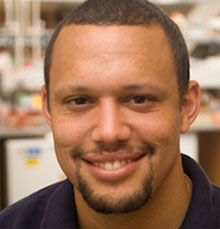

- 
- Member Status:Sep 01, 2009 - Jan 04, 2010
- Current Location:Professor at Boston University
- Email:doug.densmore@gmail.com
Douglas DensmorePostdoc, Bioengeneering/EECS
Douglas received his Bachelors of Science in Computer Engineering from the University of Michigan in April 2001. He received his Masters of Science in Electrical Engineering in May 2004 and his PhD in Electrical Engineering in May 2007 (both from UC Berkeley). After receiving his PhD he was a UC Chancellor’s post doctoral researcher both at UC Berkeley and the Joint BioEnergy Institute (JBEI). Douglas led UC Berkeley’s award winning software tools team for the International Genetically Engineered Machine Competition (iGEM) in 2008 and 2009.
Clotho: BioCAD tools for synthetic biology
Douglas initiated the development of Clotho while at Berkeley and continues to spearhead the effort from BU. Clotho is a software platform for designing and assemblying synthetic biological systems. It provides a mechanism to connect repositories of genetic parts with a wide variety of apps designed to use that information. These Apps provide the functionality and user interfaces that enable data management, automation of design tasks, visualization and simulation, control of liquid handling robotics, sample management, sharing data, or anything else that you might think to do with the data. Clotho provides a data model which is consistent with the needs of the synthetic biology community and provides access to it via an easy to use API. Most importantly, anyone can write a Clotho App with basic knowledge of Java programming using this API. Clotho is an open source project with collaborations at Boston University, UC Berkeley, MIT, BBN Technologies, and the BioFAB. For more complete information, please visit the website at http://www.clothocad.org.
Additionally, Douglas developed the domain specific language “Eugene” for synthetic biological systems. Eugene allows for both the specification of synthetic biological designs based on biological parts, as well as providing a very expressive constraint system to drive the automatic creation of composite Devices from a collection of individual Parts. Eugene allows for the rapid design space exploration of composite devices by permuting individual devices using available parts and rules for their composition. Eugene then communicates with the Clotho design environment in order to interface with liquid handing robots for an automated assembly flow for synthetic biology.